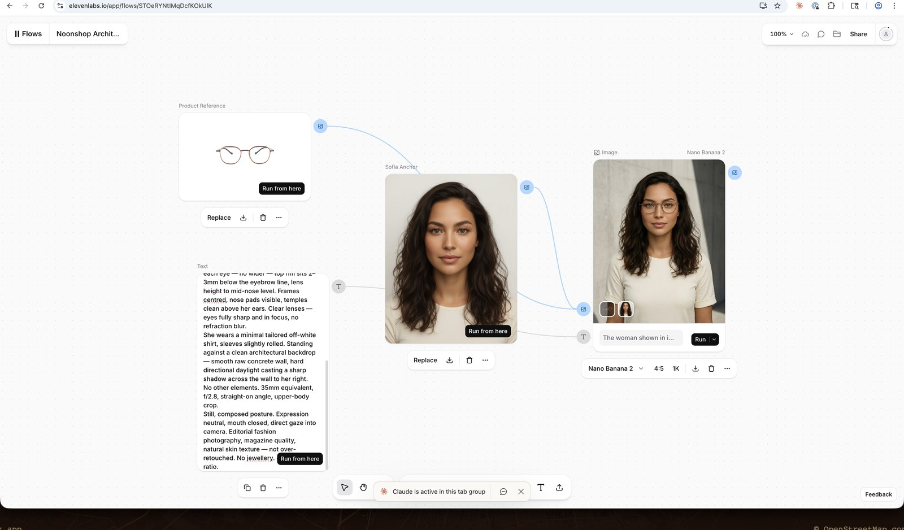

What is ElevenCreative Flows?
A node-based visual pipeline builder. Chain 50+ generative models (image, video, speech, music, sound effects) on an infinite canvas. Each node is independent — change one input, re-run only that node, leave everything else intact.

ElevenCreative Flows canvas — our Noonshop Architectural shot (Sofia × Dormann). Three nodes: Product Reference image → Sofia Anchor image + Text prompt → Nano Banana 2 generation.
ElevenCreative Flows is distinct from ElevenCreative Studio (which is a linear timeline editor). Flows = pipeline orchestration. Studio = final editing and track layering. The two are designed to complement each other: build in Flows, finish in Studio.
Key capabilities
Our 3-Node Pipeline
Every Noonshop archetype shot follows the same structure. Three nodes, two inputs, one output. The Text node carries the full archetype prompt from the content framework.
e.g. DO12410TPE-PO_FRONT.png
e.g. sofia_anchor_v1.jpg
+ prompt
Run from output node
Inputs
- Image slot 1: product reference (frame front view)
- Image slot 2: model anchor portrait
- Text: full archetype prompt from framework
Settings
- Model: Nano Banana 2
- Aspect ratio: 4:5 (portrait)
- Resolution: 1K
- No seed — variations per run
Live Canvas
The pilot flow for the Sofia × Dormann Architectural archetype is saved and can be cloned as a template for each new archetype.
To run a different archetype, replace the Text node's content with the corresponding prompt from the Content Framework. Replace the product reference image for a different collection (Steel Brown, DeNova). The Anchor image stays the same for the same model.
To run a different model (e.g. Amara), replace the Anchor image node with Amara's anchor file. Everything else stays the same.
Pilot Results — Sofia × Dormann
Validated on the Architectural archetype. Output matched the framework spec: correct frame shape, identity held, background clean. All 6 archetypes for Sofia × Dormann were completed using this pipeline.
Frame shape: Dormann wire optical ✓
Identity: Sofia anchor held ✓
Setting: raw concrete wall ✓
Framing: 4:5 upper-body ✓
Run details
- Model: Nano Banana 2
- Ratio 4:5 · 1K
- v2 prompt (landmark anchor fix)
- Archetype: Architectural
Full pilot — 6 archetypes locked
| Archetype | File | Prompt version | Status |
|---|---|---|---|
| Studio | studio_dormann_v2.png |
v7 prompt | ✓ Locked |
| Boulevard | boulevard_dormann_v1.png |
v1 prompt | ✓ Locked |
| Interior Warm | interior_dormann_v1.png |
v1 prompt | ✓ Locked (L8: frame slightly oversized) |
| Architectural | architectural_dormann_v1.png |
v2 prompt | ✓ Locked · best frame accuracy |
| Macro Frame | macro_dormann_v1.png |
v1 prompt | ✓ Locked · best frame shape of pilot |
| Quote Card | quote_dormann_v1.png |
v3 prompt | ✓ Locked (L10: mood not layout) |
TOS-Safe Prompting
ElevenLabs flags prompts that instruct the model to replicate a specific person's face. This is by design — it prevents deepfake-adjacent use. The fix: frame the task as styling, not replication. The identity comes from the reference image, not from the prompt text.
❌ Rejected prompt framing
✅ Approved prompt framing (L11)
Credit Model
Each node generation costs credits identical to the standalone tool pricing. Re-running a node triggers a new generation and a new charge.
What costs credits
- Each Nano Banana 2 generation
- Every re-run (new credits charged)
- Upscale node (if used)
- Each failed run is not charged
What doesn't cost credits
- Uploading reference images
- Editing the Text node
- Saving the flow canvas
- Viewing existing outputs
Limitations & Roadmap
As of April 2026. This is an Alpha product — these constraints will change.
| Feature | Status | Notes |
|---|---|---|
| Visual node canvas | ✓ Live | Infinite canvas, drag-and-drop nodes |
| Nano Banana 2 | ✓ Live | Image generation node, 50+ models available |
| Reference image inputs | ✓ Live | Upload Media nodes for product + anchor |
| Non-destructive iteration | ✓ Live | Edit one node, re-run independently |
| Template library | ✓ Live | Perfume Ad, E-commerce Store, Yacht Promo + more |
| Export to ElevenCreative Studio | ✓ Live | For timeline-based finishing |
| Automated batch variants | ✗ Not available | Manual re-runs only; no loop/variant automation |
| API / programmatic execution | ⏳ Planned | Listed in docs as future release; enables CMS integration |
| Seed / deterministic output | ✗ Not available | Each run is a new generation, no seed control |
| Multi-model chaining (audio + image) | ✓ Live | Can chain TTS + video nodes if needed |
Quick Start
How to run a new archetype shot using the existing pilot flow as a starting point.
Navigate to Noonshop Architectural · Sofia × Dormann. Use it as a reference or clone it (Files → Duplicate) to create a new flow.
Click Replace on the Product Reference image node. Upload the front-view product image for the target collection (e.g. DO12410TPE-PO_FRONT.png for Dormann warm copper).
If running a different model (not Sofia), replace the anchor image with the target model's anchor file (e.g. amara_anchor_v1.jpg). Keep it the same if staying with Sofia.
Open the Content Framework, go to the Prompt Templates section, copy the target archetype prompt. Paste it into the Text node in Flows. Make sure it opens with the TOS-safe framing: "The woman shown in image 2 (the portrait reference), wearing the exact eyeglasses shown in image 1."
Click Run on the rightmost generation node. Hover to confirm credit cost. If you get a TOS error, check the prompt framing — see the TOS section above.
Run the output through the QA Gate in the framework. If it passes, download via the ↓ icon and save to assets/output/pilot-[model]/[model]/[archetype]_[collection]_v1.png.
Add the locked file to the framework's Files section with version number, prompt version, and any lessons learned. Update the pilot status callout.